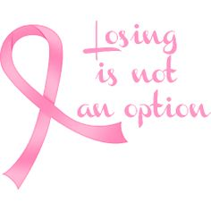

@copyright 2016 TJHacks
@copyright 2016 TJHacks
 Cancer Foundations:
The Children's Cancer Foundation, Inc. (CCF), an independent nonprofit foundation not affiliated with any national charity, is a major force in fighting children's cancer in Maryland, DC and Northern Virginia.
The National Breast Cancer Foundation's mission is to provide help and inspire hope to those affected by breast cancer through early detection, education, and support services.
PCF's mission is to accelerate the world's most promising prostate cancer research for better treatments and cures.
Through increased public and professional awareness, prevention through lifestyle changes, early detection initiatives, education, improved treatment modalities, and sponsorship of research, the Oral Cancer Foundation's mission is to contribute to the reduction of suffering, permanent physical damage and disfigurement, and death caused by this disease.
The Bonnie J. Addario Lung Cancer Foundation (ALCF) is one of the largest philanthropies (patient-founded, patient-focused, and patient-driven) devoted exclusively to eradicating Lung Cancer through research, early detection, education, and treatment. The Foundation's goal is to work with a diverse group of physicians, organizations, industry partners, individuals, patients, survivors, and their families to identify solutions and make timely and meaningful change and turn lung cancer into a chronically managed disease by 2023.
Through education, research and advocacy, Gastric Cancer Foundation is dedicated to improving the lives of people affected by stomach cancer and to working with leading researchers to find a cure.
The mission of the National Pancreatic Cancer Foundation is to provide unwavering support for all those afflicted with or affected by pancreatic cancer, whether patient or family member, through the use of educational awareness, early detection research, support groups, and direct financial resource support programs, regardless the level of qualification of the patient.
At Lazarex Cancer Foundation we improve the outcome of cancer care, giving hope, dignity and life to end stage cancer patients and the medically underserved by providing assistance with costs for FDA clinical trial participation, identification of clinical trial options, community outreach and education.
Wings Cancer Foundation has programs and services to help people with cancer and their loved ones understand cancer, manage their lives through treatment and recovery, and find the emotional support they need.
@copyright 2016 TJHacks